beave-rs
A lightweight Rust message processing framework built around typed handlers.
cargo add beavers --features kafkaPre-release. The API may change until 0.1.0.
Example
Summarize each article on a Kafka topic with an LLM and publish the summaries to another topic:
use beavers::{
App, Classify, Result, Utf8,
adapters::kafka::{KafkaSink, KafkaSinkConfig, KafkaSource, KafkaSourceConfig},
};
async fn summarize(article: String) -> Result<String> {
let summary = call_llm(&format!("Summarize: {article}")).await.retry()?;
Ok(summary)
}
#[tokio::main]
async fn main() -> anyhow::Result<()> {
let articles = KafkaSource::<Utf8, _>::new(KafkaSourceConfig::new(
"localhost:9092",
"summarizer",
["articles"],
));
let summaries = KafkaSink::<Utf8, _>::new(KafkaSinkConfig::new(
"localhost:9092",
"summaries",
));
App::new()
.subscribe("summarize", articles, summaries, summarize)
.run()
.await?;
Ok(())
}The handler sees only the decoded value. A transient API failure is retried with backoff, and each offset is committed after its summary is published.
Subscriptions
Each Subscription connects one source, one handler, and one sink. An App runs any number of subscriptions side by side and shuts them down together.

Features
Typed handlers
Write async fn(Input) -> Result<Output>; decoding, publishing, and acknowledgement are handled for you.
At-least-once delivery
An input is acknowledged only after its output is published.
Explicit failure handling
Classify errors as retry, reject (dead-letter), or fatal; retries back off.
Concurrency with ordering
Bounded concurrency, per-key ordering, and a worker pool for blocking handlers.
Pipelines
Chain subscriptions through in-process channels with end-to-end acknowledgement.
Operations
Graceful shutdown, tracing spans, metrics, OpenTelemetry trace propagation, and /livez and /readyz probes.
Adapters and codecs
No Cargo feature is enabled by default. Enable the adapters and codecs the application uses.
kafka
Apache Pulsarpulsar
RabbitMQrabbitmq
Amazon SQSsqs
Google Cloud Pub/Subpubsub
Azure Service Busservicebus
HTTPhttp
In-process channelbuilt in
opentelemetry propagates trace context through broker metadata, health serves /livez and /readyz, and testing provides fabricated broker records for handler tests.
Errors
Errors propagated with ? reject the input, which is dead-lettered by default. The handler asks for other outcomes at the call site:
async fn handle(order: Order) -> Result<Output> {
validate(&order).reject()?; // dead-letter now (same as `?`)
let user = db.find_user(order.user_id).await.retry()?; // retry, then dead-letter
Ok(build_output(order, user))
}.fatal()? stops the subscription. Handling dead letters covers what to do with rejected inputs.
Guides
Configuration, delivery behavior for each broker, testing, monitoring, and local development brokers.